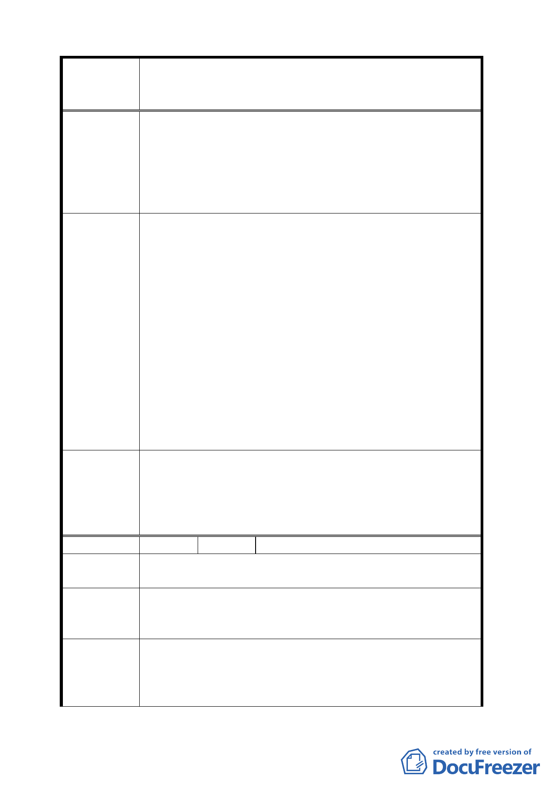

案名
建議辦法
委員會
決議
編號
陳情理由
建議辦法
委員會
決議
變更臺北市華光社區暨週邊地區住宅區、電信用地、郵
政用地及變電所用地土地為商業區、數位科技專用區及
金融服務專用區主要計畫案
巷交通已非常大，若開發華光社區，則更會讓交通大
亂無法通行
3.杭州南路 2 段 25 巷及金山南路二段 30 巷原有之停車
格在特區完成後是否存在？如果不存在，又再次損害
本地區居民之權益，每逢重大活動，本區總為受害特
區。
1.請規劃 25 巷為 20 公尺寬馬路，可向南徵收公有地，
讓交通順暢。
2.建請於特區完成後，市府能介入配合協調兩里民得於
特區內之夜間及假日停車，不再只有受害而無受益。
3.華光社區中是否有設置變電所，請明確指出其位置。
計畫實施期間造成附近居住的居民環境污染，噪音及
公共安全等，是否有嚴格管制之相關規定及配套措施
或有環評報告等？特別是針對夜間施工及假日施工，
專責督導單位為何？當發生問題時，哪一個單位能負
全責（我們不要看見大家互踢皮球）。
4.華光社區暨為重大開發案，周邊附近緊鄰之地理應等
同提升參與整體規劃，請增列為獎勵都市更新計畫之
地區，增加土地利用，例如容積率或建蔽率增加，帶
動整體社區更又有效發展。
1. 本案變更北側住宅區為道路用地，使北側道路路寬統
一達 20 公尺。
2. 有關里鄰停車及變電所施工安全等建議，責請市府停
管處及台電參考。
3. 至於更新、容積與建蔽等，另於細部計畫再行規範。
2 陳情人 華光社區現住戶許金郎等 6 人
1.對本計畫衷心贊成。
2.本計畫進程如何？預定幾年完成？
本計畫採騰空標售方式，處理約 700 戶之現住戶，
建議採大安森林公園模式妥慎處理，始可實現行政院大
投資大溫暖、照顧弱勢安居樂業之目標。
1.計畫區西北側原擬由住宅區變更為商業區區域，分區
名稱一併調整為「特定專用區」。
2.有關本計畫特定專用區未來使用項目，同意納入住宅
使用。另外，有關拆遷安置之民眾陳情及延續中正紀
-8-